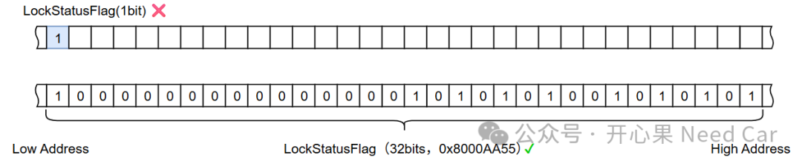
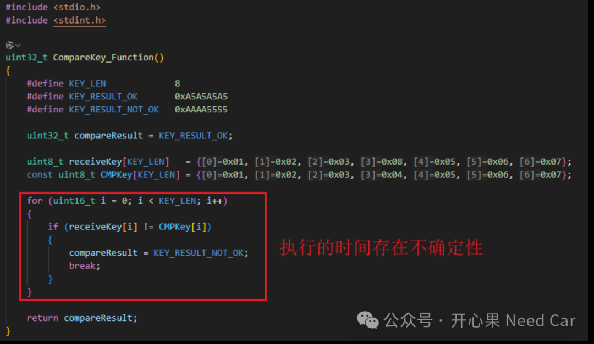
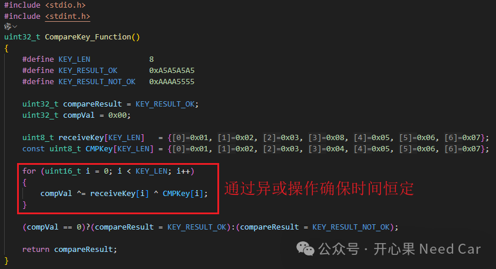

开心果 Need Car · 2026-03-02T06:20:00+08:00 · 微信原文
1.避免单bit表示状态

2.避免时间测信道攻击

uint32_t CompareKey_Function(){uint32_t compareResult = KEY_RESULT_OK;uint8_t receiveKey[KEY_LEN] = {0x01, 0x02, 0x03, 0x08, 0x05, 0x06, 0x07};const uint8_t CMPKey[KEY_LEN] = {0x01, 0x02, 0x03, 0x04, 0x05, 0x06, 0x07};for (uint16_t i = 0; i < KEY_LEN; i++){if (receiveKey[i] != CMPKey[i]){compareResult = KEY_RESULT_NOT_OK;break;}}return compareResult;}

uint32_t CompareKey_Function(){uint32_t compareResult = KEY_RESULT_OK;uint32_t compVal = 0x00;uint8_t receiveKey[KEY_LEN] = {0x01, 0x02, 0x03, 0x08, 0x05, 0x06, 0x07};const uint8_t CMPKey[KEY_LEN] = {0x01, 0x02, 0x03, 0x04, 0x05, 0x06, 0x07};for (uint16_t i = 0; i < KEY_LEN; i++){compVal ^= receiveKey[i] ^ CMPKey[i];}(compVal == 0)?(compareResult = KEY_RESULT_OK):(compareResult = KEY_RESULT_NOT_OK);return compareResult;}
往期精彩回顾